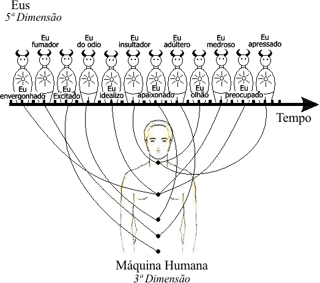

Conferência nº 32
A MUDANÇA RADICAL
Enquanto um homem prossiga com o erro de crer-se a si mesmo um, único, individual, é evidente que a mudança radical será algo mais que impossível.
O fato mesmo de que o trabalho esotérico comece com a rigorosa observação de si mesmo, está nos indicando uma multiplicidade de fatores psicológicos, eus, ou elementos indesejáveis, que é urgente extirpar, erradicar de nosso interior.
Inquestionavelmente, de modo algum seria possível eliminar erros desconhecidos. Urge observar previamente aquilo que queremos separar de nossa psique.
Este tipo de trabalho não é externo, senão interno; e aqueles que pensam que qualquer manual de etiqueta ou sistema ético externo e superficial poderá levá-los ao êxito estarão, de fato, totalmente equivocados.
O fato concreto e definitivo de que o trabalho íntimo comece com a atenção concentrada na observação plena de si mesmo é motivo mais que suficiente como para demonstrar que isto exige um esforço pessoal muito particular de cada um de nós.
Falando francamente e sem rodeios, asseveramos de forma enfática, o seguinte: nenhum ser humano poderia fazer este Trabalho por nós.
Não é possível mudança alguma em nossa psique, sem a observação direta de todo esse conjunto de fatores subjetivos que levamos dentro.
Dar por aceita a multiplicidade de erros, descartando a necessidade de estudo e observação direta dos mesmos significa de fato uma evasiva ou escapatória, uma fuga de si mesmo, uma forma de auto-engano.
Só através do esforço rigoroso da observação judiciosa de si mesmo, sem escapatórias de nenhuma espécie, poderemos evidenciar realmente que não somos “Um”, senão “Muitos”.
Admitir a pluralidade do Eu e evidenciá-la através da observação rigorosa, são dois aspectos diferentes.
Alguém pode aceitar a doutrina dos muitos Eus, sem havê-la jamais evidenciado; este último só é possível se auto observando-cuidadosamente.
Refugar o trabalho de auto-observação íntima, buscar evasivas, é sinal inconfundível de degeneração.
Enquanto um homem sustente a ilusão de que é sempre uma e a mesma pessoa, não pode mudar; e é óbvio que a finalidade deste trabalho é, precisamente, lograr uma mudança gradual em nossa vida interior.
A transformação radical é uma possibilidade definida que normalmente se perde quando não se trabalha sobre si mesmo.
O ponto inicial da mudança radical permanece oculto, enquanto o homem continue crendo-se um.
Aqueles que rechaçam a doutrina dos muitos Eus demonstram claramente que jamais se auto-observaram seriamente.
A severa observação de si mesmo, sem escapatória de nenhuma espécie, permite-nos verificar, por nós mesmos, o cru realismo de que não somos um, senão muitos.
No mundo das opiniões subjetivas, diversas teorias pseudo-esotéricas ou pseudo-ocultistas servem sempre de pretexto para fugir de si mesmo...
Inquestionavelmente, a ilusão de que se é sempre uma e a mesma pessoa serve de obstáculo para a auto-observação...
Alguém poderia dizer: "Sei que não sou um, senão muitos; a Gnose me ensinou." Tal afirmação, ainda que fosse muito sincera, se não existisse plena experiência vivida sobre esse aspecto doutrinário, obviamente tal afirmação seria algo meramente externo e superficial.
Evidenciar, experimentar e compreender é o fundamental; só assim é possível trabalhar conscientemente, para conseguir uma mudança radical.
Afirmar é uma coisa e compreender é outra. Quando alguém diz: "Compreendo que não sou um, senão muitos", se sua compreensão é verdadeira e não mero palavrório insubstancial, de fala ambígua, isto indica, assinala, acusa plena verificação da doutrina dos muitos Eus.
Conhecimento e compreensão são diferentes. O primeiro destes é da mente, o segundo, do coração.
O mero conhecimento da doutrina dos muitos Eus de nada serve. Desafortunadamente, por estes tempos em que vivemos, o conhecimento foi muito mais além da compreensão, porque o pobre animal intelectual equivocadamente chamado homem desenvolveu exclusivamente o lado do conhecimento, esquecendo lamentavelmente o correspondente lado do Ser.
Conhecer a doutrina dos muitos eus e compreendê-la é fundamental para toda mudança radical verdadeira. Quando um homem começa a observar-se detidamente a si mesmo, partindo do princípio de que não é um, mas múltiplo, obviamente, iniciou o trabalho sério sobre sua natureza interior.
